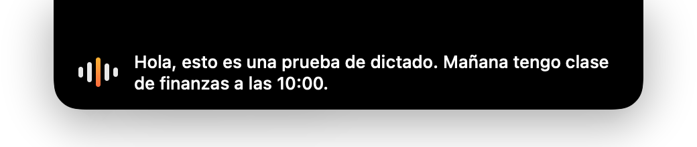

You talk 3× faster than you type.
Hold ⌥ option + ⌃ control, talk, let go. WhisperTool types it at your cursor, in any app.
Your cursor is here.
Hold the keys and watch. Your own ⌥ + ⌃ work here too.
The 43-second film, with sound.
Filmed with version 1, which ran Whisper on the Mac's own chip. Version 2 keeps the same keys, adds the live island, and is far lighter:
- 23 MB
- of memory and 0% CPU while it waits. Version 1 kept 2.6 GB loaded all day.
- 0.3 s
- to transcribe a phrase with Whisper large-v3-turbo on Groq.
- EN + ES
- language detected per phrase, mid-thought.
- 1 MB
- native app for Apple Silicon (M1 or later), macOS 14+. Free and open source.
What it does.

Live text
A real capture. While you hold the keys, a black island drops from the notch and shows your words as you say them. If the internet fails, it pastes what your Mac heard; if everything fails, the audio is kept for a retry.
Hold to talk
A beep tells you when it's listening. The microphone is only on while you hold.
Any app
Mail, Slack, Notion, your code editor, even apps in full screen. The text lands where your cursor is.
Two languages
Spanish stays Spanish, English stays English, switched per phrase automatically.
Optional AI polish
With your free Groq key, an AI pass removes ums and self-corrections, fixes punctuation, and can format a dictated email.
You choose where it listens.
Apple's on-device speech recognition. Nothing leaves your Mac.
On your Mac works offline
The audio of each dictation goes to Groq's Whisper (large-v3-turbo). The text comes back in about 0.3 s, then gets tidied.
0.3 s per phrase
No account with me, no server of mine.
Install on your Mac.
About a minute. Step 3 happens only the first time. For the best accuracy, paste a free key from console.groq.com in Settings.
-
Drag it into Applications
Open WhisperTool.dmg and drag WhisperTool onto the Applications folder.
-
Open it. macOS stops it. Click Done.
macOS says Apple could not verify “WhisperTool” is free of malware. It says that about every app that isn't notarized by Apple. Click Done, not Move to Trash.
-
Open Anyway, once
Open System Settings → Privacy & Security, scroll down to Security and click Open Anyway next to “WhisperTool” was blocked. Confirm with your password or Touch ID. From then on it opens with a double-click.
- Then: allow the microphone and talk
macOS asks for Microphone (to hear you), Speech Recognition (for the live text) and Accessibility (for the hotkey and to paste). A waveform icon appears in the menu bar. Click into any text box, hold ⌥+⌃ and talk.
Why the warning? Notarizing an app needs a paid Apple developer account ($99 a year). This is a free side project, so it isn't notarized. The full source code is on GitHub, and you can check that your download is exactly the file I built. In Terminal:
shasum -a 256 ~/Downloads/WhisperTool.dmg
should print c973ad91f580f1640c1efdbbb1c8c5c9e13aedabd0a035f5338f5fba403f6c11
Prefer the Terminal for step 3?
xattr -dr com.apple.quarantine "/Applications/WhisperTool.app"
git clone https://github.com/nachoie123/whispertool.git && cd whispertool/mac && ./build.sh